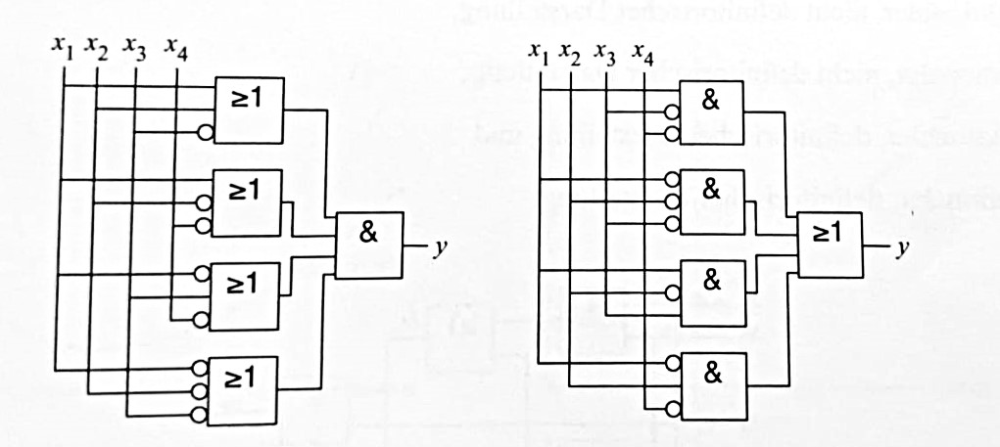

Die Gaszufuhr für einen Gasbrenner wird über zwei Handschalter freigegeben: Schalter A im Keller und Schalter B in der Küche. Gas kann fließen, solange mindestens einer der beiden Handschalter geschlossen ist. Ein Sicherheitsschalter C wird durch ein Thermoelement gesteuert, und zwar so, dass C geschlossen wird, wenn die Zündflamme erlischt. In diesem Fall muss die Gaszufuhr in jedem Fall unterbrochen werden.
Zu entwerfen ist eine Schaltung, die eine Sperre X ansteuert. Ist X aktiviert, wird die Gaszufuhr unterbrochen. Wir nehmen folgende Kodierung vor:
A: Handschalter A (0 = geschlossen, 1 = geöffnet)B: Handschalter B (0 = geschlossen, 1 = geöffnet)C: Sicherheitsschalter C (0 = geschlossen: Zündflamme aus, 1 = geöffnet: Zündflamme brennt)X: Sperre X (0 = Sperre nicht aktiviert, 1 = Sperre aktiviert)Dabei sind A, B und C die Eingangssignale, X ist das Ausgangssignal der Schaltung. Die Bedingung für eine Unterbrechung der Gaszufuhr (Aktivieren der Sperre X) lautet: Die Zündflamme ist ausgegangen oder beide Handschalter sind offen.
Es sind zwei Schaltnetze gegeben. Für jedes Schaltnetz sollen die entsprechende Wahrheitstabelle und die boolesche Funktion aufgestellt werden.

Es ist die folgende Wahrheitstabelle gegeben. Gib die boolesche Funktion an (vereinfache, wenn möglich) und erstelle das Schaltnetz.
| B | C | D | f |
|---|---|---|---|
| 0 | 0 | 0 | 1 |
| 0 | 0 | 1 | 1 |
| 0 | 1 | 0 | 1 |
| 0 | 1 | 1 | 1 |
| 1 | 0 | 0 | 0 |
| 1 | 0 | 1 | 1 |
| 1 | 1 | 0 | 1 |
| 1 | 1 | 1 | 0 |
Bei der Talentshow „Deutschland sucht den Super-Informatiker“ (DSDSI) entscheidet eine Jury aus drei Personen per Mehrheitsabstimmung, ob ein Kandidat weiterkommt oder nicht.
Bei der Übertragung von drei Datenbits A, B und C wird ein Paritätsbit P mitgeschickt. P ist 1, wenn die Anzahl der Einsen unter A, B und C ungerade ist.
Ein Mikrocontroller hat ein 8-Bit-Addierwerk aus acht verketteten Volladdierern. Das Ergebnis landet in einem 8-Bit-Register. Der Übertrag aus der höchsten Stelle wird als Flag C gespeichert. Zwei Programme nutzen dasselbe Addierwerk:
Berechne für jede Addition schriftlich mit Überträgen:
Gib jeweils an:
Beschreibe abschließend, warum das Flag C für den Schrittzähler genügt, für die Temperaturregelung aber nicht.
Der Registerwert ist immer die Summe modulo 256. Ob er „stimmt“, hängt nur davon ab, wie das Programm die Bits deutet.
Ein Lüfter im Serverraum (Ausgang f = 1: Lüfter läuft) wird von vier Sensoren gesteuert:
A: Temperatur zu hoch (1 = ja)B: Luftfeuchte zu hoch (1 = ja)C: Fenster offen (1 = offen)D: Nachtbetrieb (1 = Nacht)Der Lüfter läuft genau dann, wenn mindestens eine dieser Regeln zutrifft:
Bearbeite die folgenden Schritte:
Eine Funktion f(A,B,C,D) ist genau für die Zeilennummern 1, 3, 5, 7, 9, 11 gleich 1. Die Zeilennummer ist die Dualzahl ABCD, A ist das höchstwertige Bit. Tom hat folgende Lösung abgegeben:
1. Gruppe 1: Felder 1, 3, 5, 7 → ¬A ∧ D 2. Gruppe 2: Felder 9, 11 → A ∧ ¬B ∧ C ∧ D 3. f = (¬A ∧ D) ∨ (A ∧ ¬B ∧ C ∧ D) 4. D ausklammern: f = D ∨ (¬A ∨ (A ∧ ¬B ∧ C)) 5. Die Schaltung braucht mindestens 6 Gatter.